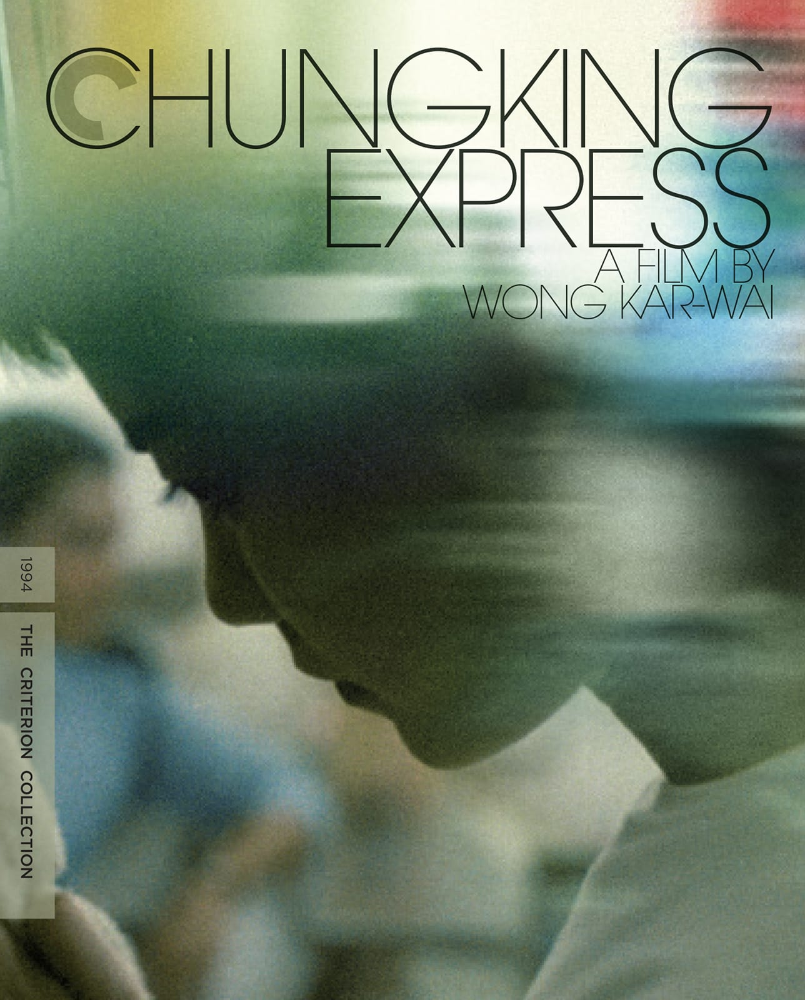
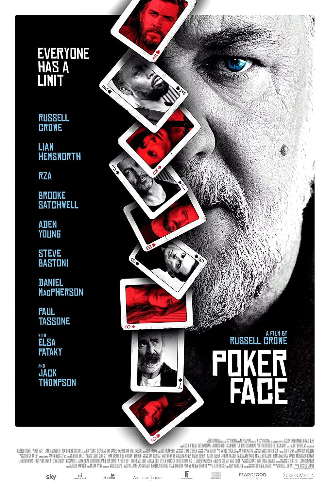

Avatar
Beavis and Butt-Head
Burning
Licorice Pizza
Top Gun: Maverick
Vistas en 2022
Nightmare Alley
Stanton Carlisle se une a un carnaval sórdido, trabajando con "Mademoiselle Zeena" y su
esposo alcohólico, Pete.
The Last Picture Show
Situada en una ciudad semificticia de Anarene, Texas, a principios de los años 50, trata
de la amistad de Sonny Crawford (Timothy Bottoms) y Duane Jackson (Jeff Bridges).

Don’t Look Up
Dos astrónomos de bajo nivel, al descubrir que un meteorito golpeará la Tierra en seis
meses, realizan una gira mediática para tratar de advertir al mundo, pero encuentran una
población poco receptiva e incrédula.
The Virgin Suicides
Un grupo de amigos se obsesiona con cinco hermanas misteriosas que son protegidas
por sus padres estrictos y religiosos.
Rosemary’s Baby
Una joven pareja se muda a un infame edificio de Nueva York para
formar una familia. Las cosas se vuelven aterradoras cuando Rosemary comienza a
sospechar que su bebé no está seguro alrededor de sus extraños
vecinos.
Mejores Puntuadas

Chungking Express
Dos melancólicos policías de Hong Kong se enamoran: uno de una misteriosa figura del
inframundo, el otro de una hermosa y etérea mesera en un restaurante nocturno que él
frecuenta.
Nope
Los residentes de una quebrada solitaria del interior de California son testigos de
un descubrimiento extraño y escalofriante.
Gentlemen Prefer Blondes
Lorelei Lee es una hermosa corista comprometida para casarse con el rico Gus Esmond,
para gran desaprobación del rico padre de Gus, Esmond Sr., quien piensa que Lorelei
solo busca su dinero.
The Godfather
Cuando el patriarca de la familia del crimen organizado, Vito Corleone, apenas
sobrevive a un atentado contra su vida, su hijo menor, Michael, interviene para
encargarse de los posibles asesinos, lanzando una campaña de sangrienta venganza.
Avatar: The Way of Water
Jake Sully y Ney'tiri han formado una familia y están haciendo todo lo posible para
permanecer juntos. Sin embargo, deben dejar su hogar y explorar las regiones de
Pandora. Cuando resurge una antigua amenaza.
Peores Puntuadas
Scream
Veinticinco años después de los brutales asesinatos de Woodsboro, un nuevo asesino
se ha puesto la máscara de Ghostface
y comienza a acechar a un grupo de adolescentes para resucitar los secretos del
pasado de la ciudad.
Blonde
Sin entrar en detalles, probablemente la peor adaptacion "biográfica" de un artista
antes vista en pantalla. Perdon Marilyn.
Don’t Look Up
Dos astrónomos de bajo nivel, al descubrir que un meteorito golpeará la Tierra en
seis meses, realizan una gira mediática para tratar de advertir al mundo, pero
encuentran
una población poco receptiva e incrédula.
Spiderhead
Un preso en una penitenciaría de última generación comienza a cuestionar el
propósito de las drogas para controlar las emociones que está probando para un genio
farmacéutico.

Poker Face
Un multimillonario tecnológico reúne a sus amigos en su casa para un juego de póquer
de alto riesgo. Las cosas salen mal cuando su mansión es invadida por un peligroso
asesino.
En el cine
Licorice Pizza
Ambientada en el Valle de San Fernando en la década de 1970, la película sigue a un
estudiante de secundaria que también es un actor infantil exitoso.
Nightmare Alley
Un carnavalero ambicioso con talento para manipular a la gente con unas pocas
palabras bien escogidas se engancha con una psiquiatra que es incluso más peligrosa
que él.

The Batman
En su segundo año de lucha contra el crimen, Batman descubre la corrupción en Gotham
City que conecta a su propia familia mientras se enfrenta a un asesino en serie
conocido como Riddler.
Carnival of Souls
La película narra la historia de Mary Henry quien es víctima de
un accidente automovilístico. Mary puede escapar de la tragedia, un poco
desorientada y
muy diferente emocionalmente.
Argentina, 1985
Historia veridica de cómo un fiscal, un joven abogado y su inexperto equipo
legal se atrevieron a enjuiciar a los jefes de la dictadura militar
argentina.